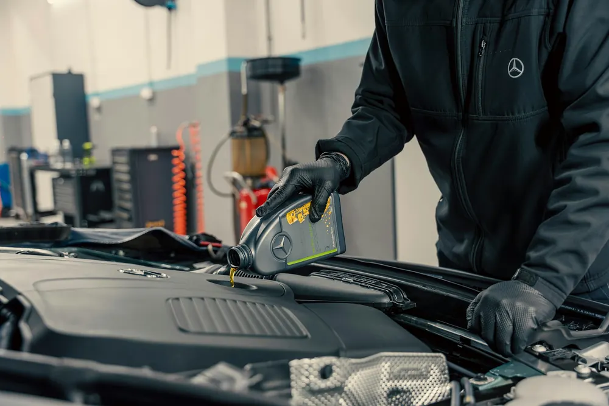
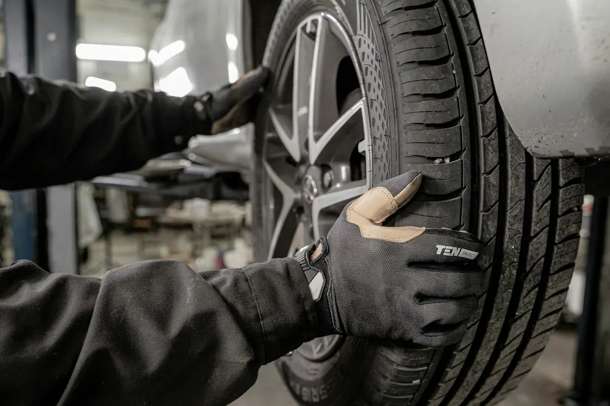
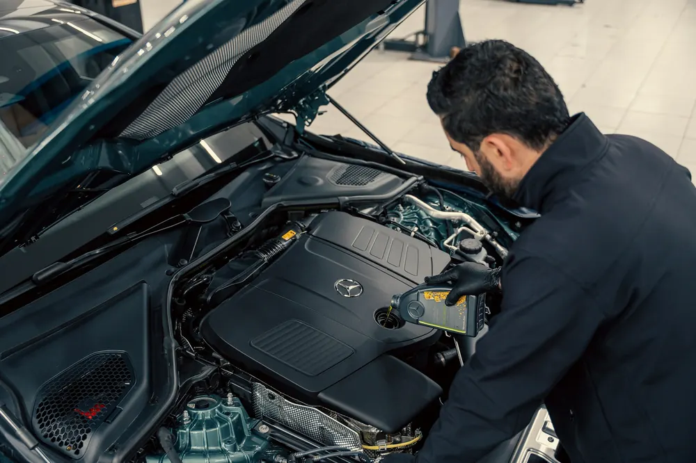

Szerviz-diagnosztika
Számítógépes hibakeresés, ha ég egy lámpa vagy furcsán viselkedik az autó.
Diagnosztika, javítás, időszakos szerviz, gumiszerelés és műszaki vizsga egy helyen, a Táncsics Mihály utca 42. alatt.
4,7 65 Google-vélemény

Bármilyen márkájú személyautót fogadunk – a gumicserétől a hibakeresésen át a műszaki vizsgáig.
Számítógépes hibakeresés, ha ég egy lámpa vagy furcsán viselkedik az autó.
Fék, kuplung, motor és elektromos hibák javítása.

Olaj- és szűrőcsere, átvizsgálás a gyári előírás szerint.

Szezonális gumicsere, szerelés és kiegyensúlyozás.
Futóműhibák javítása és pontos beállítás.
Kipufogórendszer javítása és cseréje.
Ezen felül: klíma fertőtlenítés, felkészítés műszaki vizsgára és műszaki vizsgáztatás. A borítóképükön: Hella Gutmann Solutions · OMV Bixxol.
Nálunk a vizsga előtti javítás és a műszaki vizsgáztatás egy helyen van: nem kell két helyre vinnie az autót. Ezeket érdemes előtte átnézetni:

Egyszerű menet, kevés telefonálással.
Itt az oldalon vagy telefonon jelzi, mire van szüksége és mikor jönne.
Egyeztetjük a napot, és hogy mennyi időre kérjük az autót.
Az összefüggő hibákat is megnézzük, és közben tájékoztatjuk.
Elmondjuk, mit csináltunk, és mire figyeljen legközelebb.
65 vélemény a Google-on.
A Facebookon 8 értékelőből mindenki ajánlja.
„2011-óta hozom ide az autómat… Mindig gyorsan, magas szakmai színvonalon végezték a munkát, korrekt árakon!”Google-vélemény
„Munkájukat rendkívül nagy szakértelemmel végzik, pontos, korrekt módon.” Az összefüggő hibákat is megnézik, közben tájékoztatnak, és tartják a határidőt.Google-vélemény
Nem találja a választ? Hívjon minket: +36 20 971 8110
Márkafüggetlen autó- és gumiszerviz vagyunk: bármilyen márkájú személyautót fogadunk.
Igen. Felkészítjük az autót a műszaki vizsgára, és a műszaki vizsgáztatást is vállaljuk.
Az oldal időpontkérőjén adja meg, mire van szüksége és melyik héten jönne, és visszahívjuk. Telefonon is kérhet időpontot: +36 20 971 8110.
Igen, autó- és gumiszerviz vagyunk: gumiszerelést, futómű-szervizt és futóműbeállítást is végzünk.
Hétfőtől csütörtökig 8:00–16:00, pénteken 8:00–15:00, hétvégén zárva.
Pécsi Autóklinika – márkafüggetlen autó- és gumiszerviz.